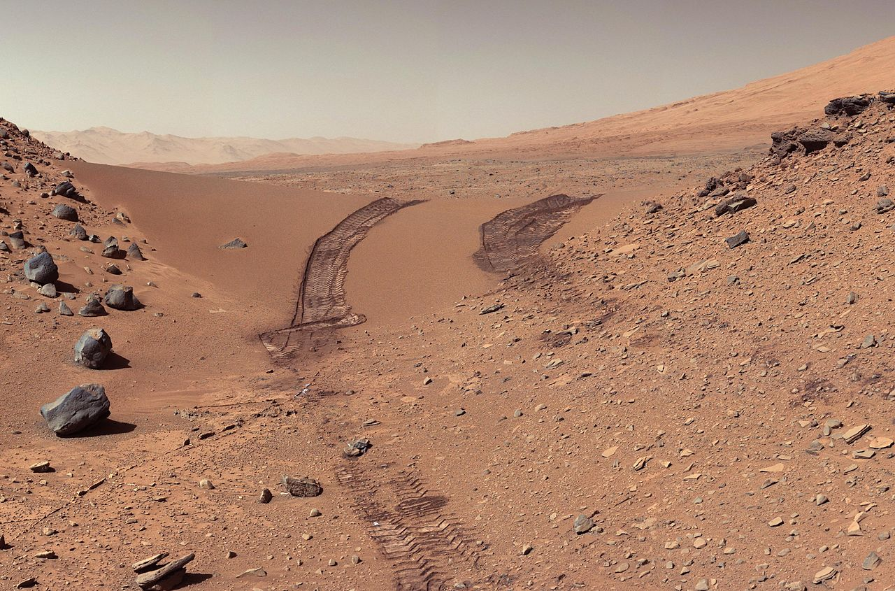
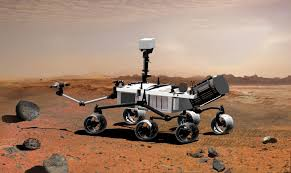
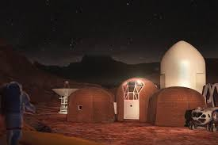
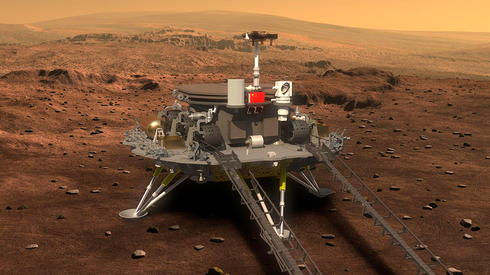
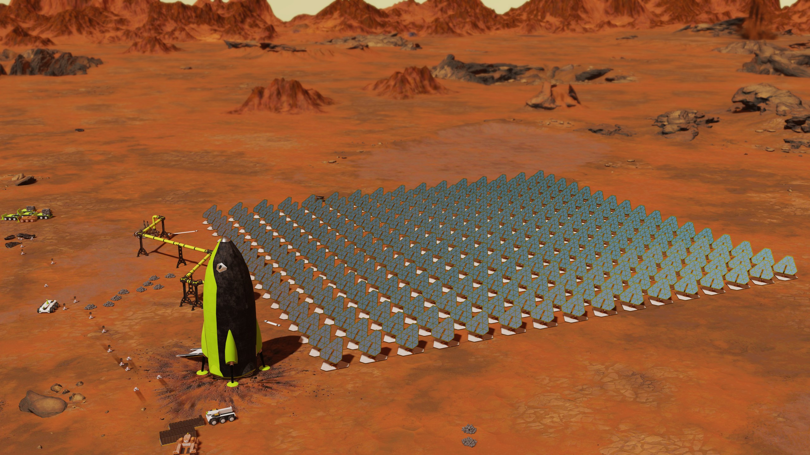
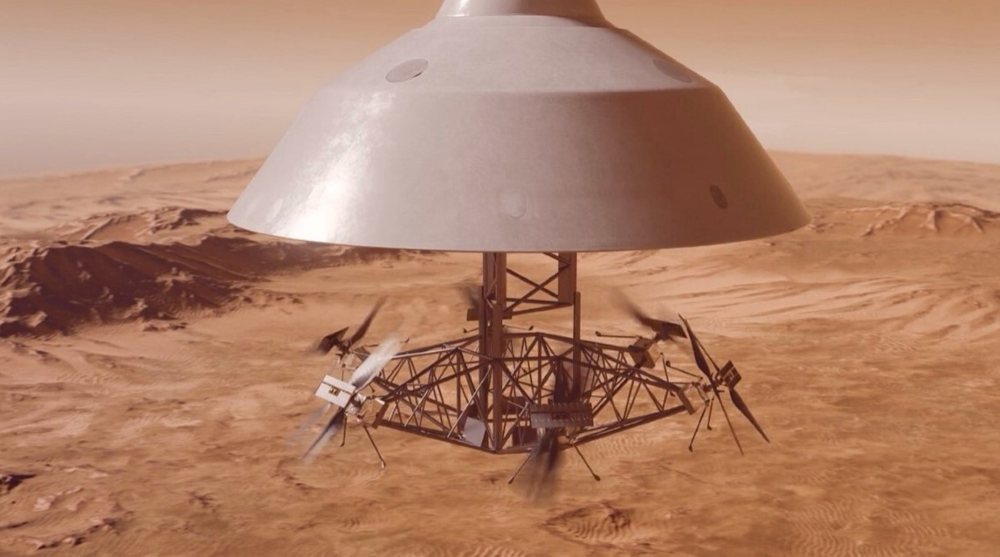

Видобуваємо Гелій-3 на Марсі
Ми прилетіли на Марс та побудували колонію для видобутку Гелію-3. Це рідкісний газ, на Землі його майже немає, а тут він прямо в ґрунті. З нього можна робити надзвичайно сильне паливо яке у 10 разів сильніше за ракетне паливо.
Як це працює: беремо декілька кілограмів марсіанського грунту, потім його поміщають у спеціальну піч де цей ґрунт перетворюється на газ - Гелій-3. Потім його зберігають у спеціальних баках.
Якщо все піде за планом, через пару років ми зможемо відправляти перші партії Гелію-3 на Землю. І тоді технології підуть до верху.
Тут ми гріємо ґрунт. Температура всередині 700 градусів. За добу виходить близько 50 грам чистого Гелію-3. Начебто мало, але цього вистачає щоб заживити всю базу на тиждень.
Тут ми живемо. Шість кімнат, кухня, спільна зона де можна відпочити. Від радіації захищає товстий шар свінцових пластин на стінах.
Величезні баки де лежить стиснутий Гелій-3. Всередині температура мінус 269 градусів. Якщо бак пошкодиться, газ миттєво випарується, тому охороняємо його дуже сильно.
Сонячні панелі працюють вдень, а коли сонця немає — ми вмикаємо маленький реактор який працює на тому ж Гелії-3. Видає 200 кіловат, нам вистачає цього ще й остається про запас
Командир. Розбирається в реакторах і стежить щоб усе працювало як треба.
Пілот. Він буде доставляти газ на орбіту коли почнуться поставки на Землю.
Геолог. Шукає місця де в ґрунті найбільше Гелію-3.
Механік. Лагодить усе що ламається.

Сліди нашого марсохода

Наш марсохід

Житловий модуль

Іслідуючий модуль

Сонячні панелі та корабель який їх доставив

Наш корабель
Доба на Марсі триває 24 години 37 хвилин. Майже як на Землі, тільки трохи довше.
Температура тут скаче від -140 до +20 градусів. Вранці мінус 100, вдень майже нуль.
Гравітація всього 38% від земної. Я тут важу 30 кіло замість 80, можна стрибати на три метри.
Захід Сонця на Марсі, синього кольору.
До 2013 року з 13 спроб м'якої посадки на Марс, 6 закінчилися невдачею.
Мене звати Микита Жежера і я із команди Web Explorers
2026 рік